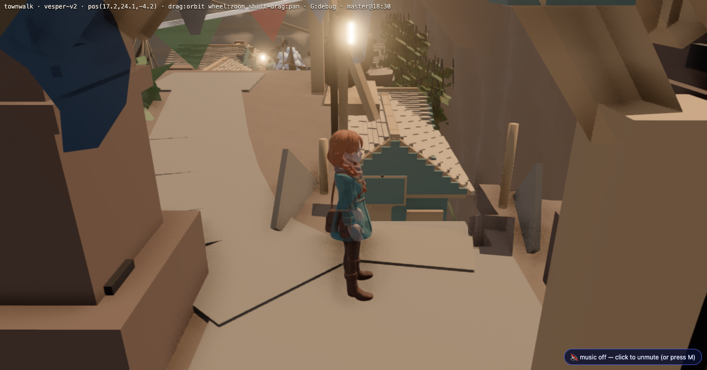
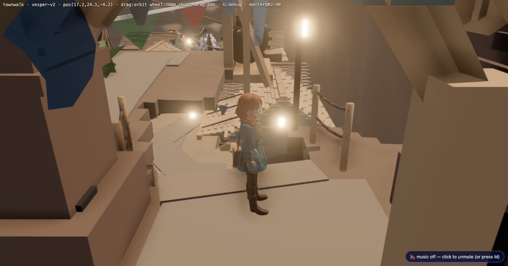
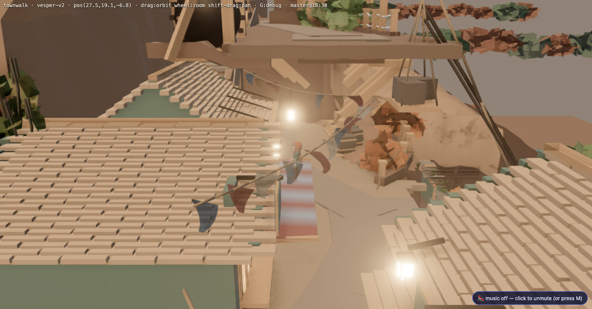
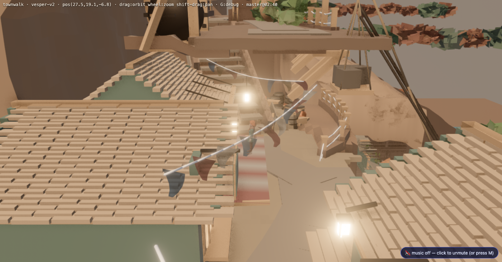
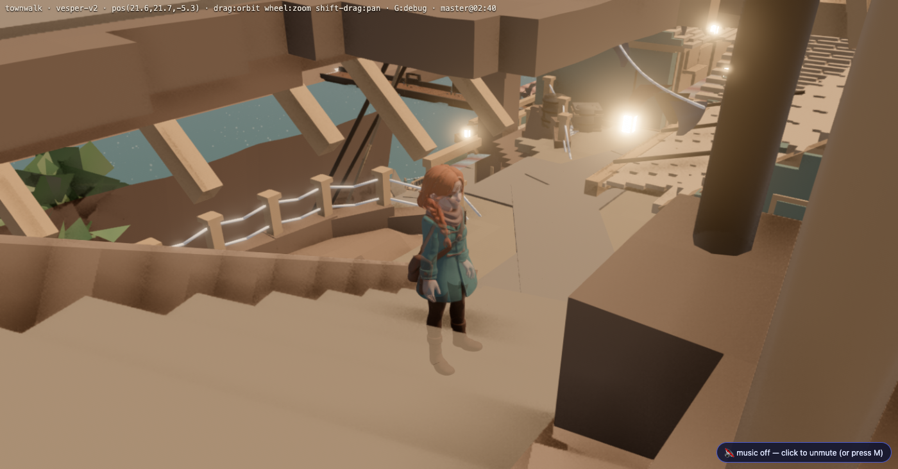
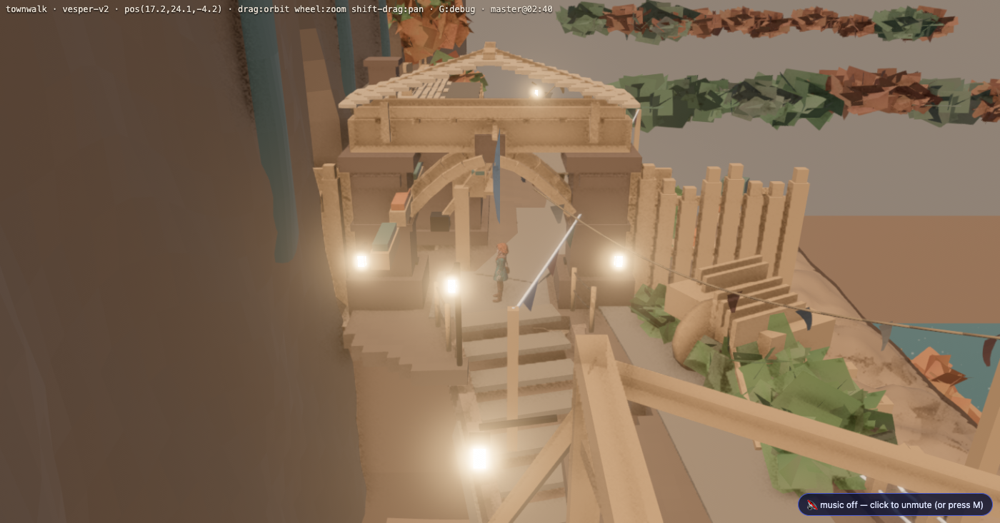

Dellhollow vertical circulation — Bet 2 (realtime tier, no bakes)
User ruling 2026-08-06, verbatim: "even for the front gate going down to the shelf street
with the shops, there are still two different ways to go down to the shelf level. One is a
staircase that's a bit confusing, and I think we should just really simplify that descent...
There's nothing to gain by adding more complex, interesting stairs that just confuse and
frustrate our players."
Iteration 1 — THE ONE DESCENT (gate → shelf street)
What collapsed: the 3-leg S-bend stair (2 pivots, 1.4 u treads,
condemned by REDLINE #2 as unclimbable) and the "gate-stair" teleport passage — the two
competing ways down — are both DELETED. What replaced them: ONE
straight 2.2 u-wide flight, 13 treads, 31° (shallower than any S-bend leg), from the arch
straight down to the Boatmen's Rest doorstep. The winch road re-rooted valley-gate→gatehouse
so the gate square fans clean; the corbel gallery got a real stairwell (3 brackets skipped,
tools/gate_stairwell_chop.py); the lower flight runs under the gallery as an arcade with a
measured 2.69..4.60 m of headroom.
ENGINE RECEIPTS (townwalk, real Chrome on :3000)
_court_probe --way gate pad -> flight -> inn doorstep -> street : 7/7 legs, BOTH ways, no stalls
_court_probe --comp seeds gate-pad + street, box x12..33 : ONE component, 331 cells, both seeds identical
walk_engine_gate --scene townwalk : GREEN — 3962/3962 cells, 0 lost, BVH fail 0
routes_derive --town dellhollow --check : clean (15 shots)
gs_build acceptance (art over walk surface) : empty — was gate_road +0.30/+0.35 over t01/t02

BEFORE — from the gate: the S-bend drops away right, the road crowds the head, the way down is a shadowed slot.

AFTER — one wide flight behind the rope fence; winch road re-rooted out of the corridor.

BEFORE — from the street: the S-bend's striped lower flight dead-ends into the shop road.

AFTER — the ONE flight lands at the Boatmen's Rest doorstep; rope fence reads as the line down.

AFTER — mid-flight, 2.2 u of tread width, gallery arcade above-right.

AFTER — the arch from above; the descent leaves frame-right.
Owed (recorded, not hidden): (1) the stairwell mouth reads as a dark
pit from the gate until the slab cut edge gets fascia/cheek returns — art finishing on the
realtime tier, this lane's next loop; (2) the del-cine solve/plates/scenegraph for gate +
shelf-west are STALE against this geometry by design (phase law: bakes once at the end) —
the map + cameras.json carry _owed_closing_lane notes; (3) ga_build's threshold-lantern brief
still aims at the old stair seam (it re-founded clear, but the brief coordinates are stale).